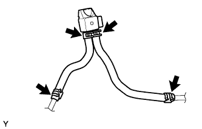
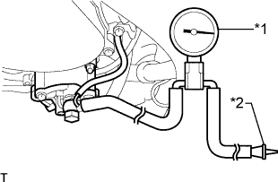

СИСТЕМА СНИЖЕНИЯ ТОКСИЧНОСТИ ОТРАБОТАВШИХ ГАЗОВ (для моделей с DPF) > ПРОВЕРКА БЕЗ СНЯТИЯ С АВТОМОБИЛЯ |
| 1. ПРОВЕРЬТЕ СЕДЛО КЛАПАНА РОГ |
Убедитесь, что двигатель запускается и нормально работает на холостом ходу.
Выключите двигатель.
| 2. ПРОВЕРЬТЕ РАБОТУ КЛАПАНА РОГ |
Подсоедините портативный диагностический прибор к DLC3.
Включите зажигание и портативный диагностический прибор.
Войдите в следующие меню: Powertrain / Engine and ECT / Active Test / Control the EGR Step Position.
Проверьте значения Data List / Target EGR Position и Actual EGR valve pos.
| Условие диапазона управления | Заданные условия |
| Выполняется активная диагностика (клапан РОГ устанавливается в следующие положения: 0% → 30% → 60% → 90% → 60% → 30% → 0%) | Фактическая степень открывания клапана РОГ изменяется в соответствии с командами, выдаваемыми в режиме Active Test |
| 3. ВИЗУАЛЬНО ПРОВЕРЬТЕ ШЛАНГИ, СОЕДИНЕНИЯ И ПРОКЛАДКИ |
Осмотрите шланги, разъемы и прокладки и убедитесь в отсутствии трещин, утечек и повреждений.
|  |
Убедитесь, что шланги дифференциального датчика давления подключены правильно, не отсоединены, не протекают, не имеют трещин и не повреждены как-либо иначе.
| 4. ПРОВЕРЬТЕ ВАКУУМНЫЙ НАСОС В СБОРЕ |
|  |
Отсоедините вакуумный шланг от вакуумного насоса.
Подсоедините шланг датчика разрежения к насосу.
| *1 | Датчик разрежения |
| *2 | Пробка |
Вставьте пробку в другой шланг датчика.
Запустите двигатель и прогрейте его в течение не менее 2 минут.
Измерьте отрицательное давление насоса на холостом ходу двигателя.
Снимите датчик с насоса.
Подсоедините шланг к насосу с помощью фиксатора.
| 5. ПОРЯДОК ПРИНУДИТЕЛЬНОЙ РЕГЕНЕРАЦИИ САЖЕВОГО ФИЛЬТРА (DPF) |
Отсоедините провод от отрицательного (-) вывода аккумуляторной батареи или извлеките предохранитель EFI, по крайней мере, на 1 мин.
Подсоедините портативный диагностический прибор к DLC3.
Запустите двигатель и подождите, пока температура охлаждающей жидкости двигателя не достигнет 60°C (140°F) или более высокого значения.
Для моделей с механической трансмиссией:
Переместите рычаг переключения передач в положение N и включите стояночный тормоз.
Для моделей с автоматической трансмиссией:
Переместите рычаг переключения передач в положение P и включите стояночный тормоз.
Включите портативный диагностический прибор.
Войдите в следующие меню: Powertrain / Engine and ECT / Active Test / Activate the DPF Rejuvenate (PM).
| *1 | Воздух |